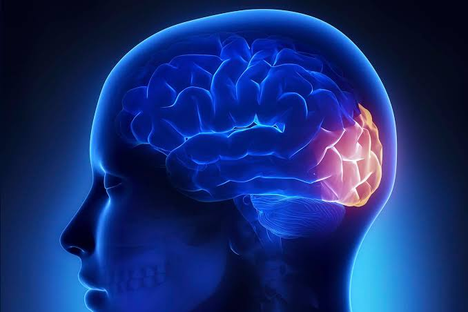

1. Generalidades y Ubicación
El lóbulo occipital es el lóbulo más pequeño del hemisferio cerebral, representando sólo alrededor del 18%
del volumen neocortical total (neocórtex). Forma la porción más posterior del encéfalo, con el polo
occipital constituyendo el punto más caudal tanto del lóbulo occipital como del cerebro.
Se ubica posterior a los lóbulos parietal y temporal, presentando una cara medial y una lateral. Reposa sobre
el tentorio, mientras que su cara medial mira hacia la hoz del cerebro. Debido a sus límites arbitrariamente
definidos, asume una forma triangular que se extiende desde el polo occipital hasta el surco
parietooccipital.
Su superficie se caracteriza por una serie de eminencias o crestas llamadas giros (o circunvoluciones)
separadas por depresiones llamadas surcos. Estos pliegues aumentan el área de superficie del cerebro
y ayudan a definir sus límites.
2. Límites Anatómicos
- Cara Medial: Presenta un borde bien definido formado por el prominente surco
parietooccipital, el cual separa el lóbulo occipital del parietal. Atraviesa la corteza
occipital en un trayecto casi vertical. En su extremo inferior es continuo con la porción anterior del
surco calcarino, mientras que en el extremo opuesto se extiende un poco sobre la cara superolateral de
ambos hemisferios.
- Aspecto Lateral: No posee referencias anatómicas claras. Se delimita por una línea
imaginaria que se extiende desde el final del surco parietooccipital superiormente hasta la
incisura preoccipital inferiormente.
- Separación del Lóbulo Temporal: Se define por el mismo plano imaginario alineado con el surco
parietooccipital. Algunos autores denominan al margen entre la incisura preoccipital superiormente hasta
el surco parietooccipital inferiormente como la línea parietotemporal lateral.
3. Surcos y Giros de la Cara Lateral
Los surcos y giros son relativamente inconsistentes en ambas caras y sus descripciones varían según el autor.
Sin embargo, en la cara superolateral se reconocen tres giros notables que convergen posteriormente para
formar el polo occipital:
- Giro Occipital Superior: Es el único giro claramente definido de la cara lateral.
Es continuo con el margen superomedial de la cuña de la cara medial. Limita
superiormente con el surco parietooccipital, e inferiormente con el surco intraoccipital
o con el surco occipital transverso.
- Giro Occipital Medio: Es el más grande de los giros del lóbulo occipital (a veces
llamado giro occipital lateral). Se ubica entre el surco superior e inferior y
cubre la porción más extensa de la cara lateral, aunque con frecuencia se describe como
indefinido.
- Giro Occipital Inferior: Es difícil de distinguir e incluso a veces forma parte
del giro medio. Se ubica a lo largo del aspecto inferomedial del hemisferio. Su aspecto
posterior es continuo con el giro lingual de la cara medial del lóbulo occipital.
|